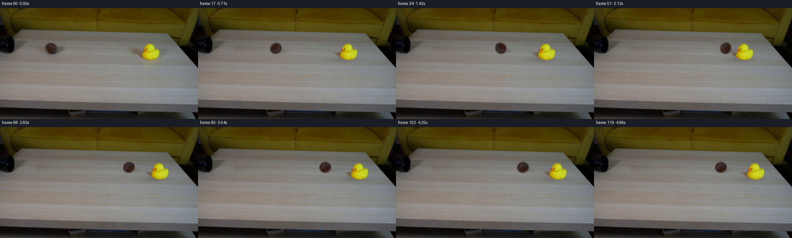
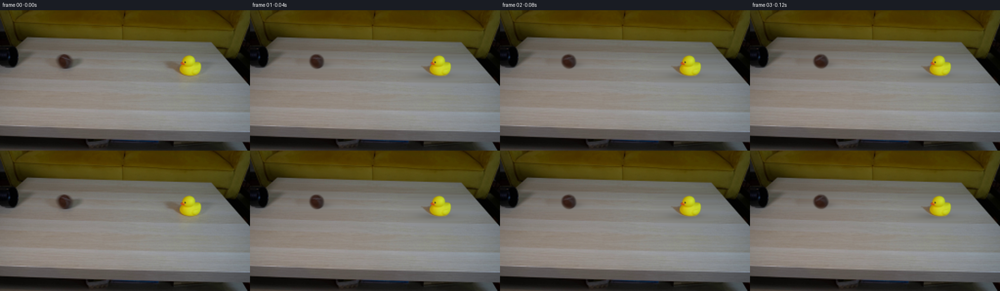
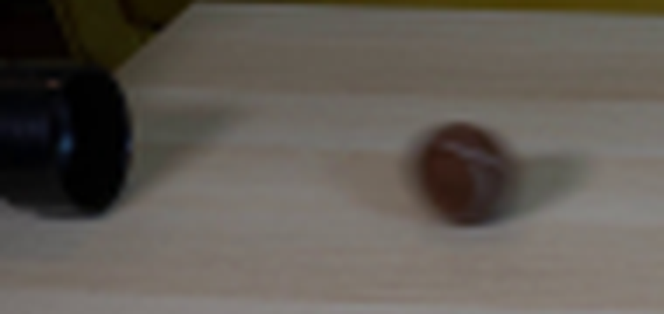
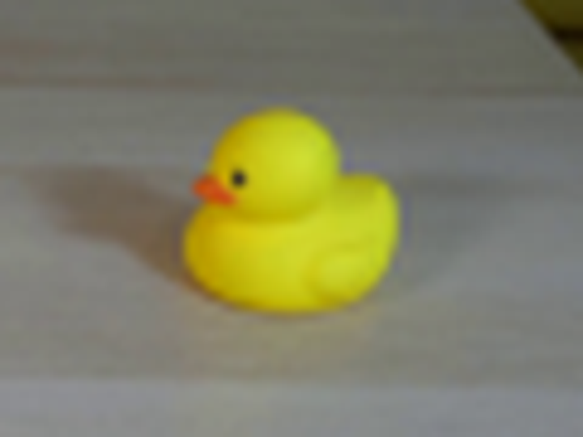
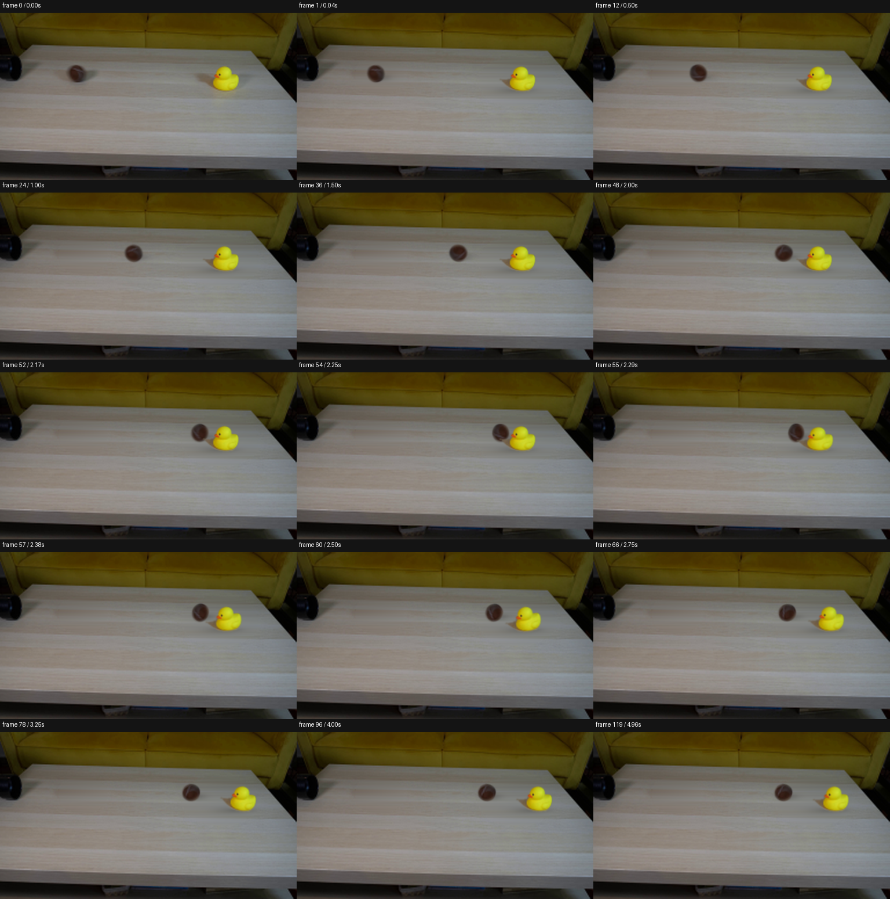

CODING AGENTS AS PIXEL WORLD MODELS
traex/GPT-5.6-Sol · 0008
点击播放 · 原生 RGB 像素
逐轮保存的候选
回放视频、检查图与代码变化。
每份候选均可单独播放。实际图片检查记录在下方工具轨迹中。
候选 01播放与检查图
点击播放 · 原生 RGB 像素


展开代码变化
--- 上一保存版本
+++ 本次保存版本
@@ -0,0 +1,243 @@
+"""Generate the requested locked-off ball/duck collision video.
+
+The photographed objects are isolated from the supplied first frame and moved as
+soft, premultiplied image layers. This preserves the particular duck, ball,
+lighting, focus, table, and camera in the input instead of replacing them with
+drawn approximations. The short collision is a deterministic damped rigid-body
+animation with rolling texture, cast shadows, impact compression, and exposure
+motion blur.
+"""
+
+from pathlib import Path
+import json
+
+import cv2
+import numpy as np
+from PIL import Image
+
+import artifact_io
+
+
+ROOT = Path(__file__).resolve().parent
+
+
+def soft_ellipse(h, w, center, radii, softness=1.0):
+ """Antialiased ellipse as float alpha."""
+ yy, xx = np.mgrid[:h, :w].astype(np.float32)
+ cx, cy = center
+ rx, ry = radii
+ d = np.sqrt(((xx - cx) / rx) ** 2 + ((yy - cy) / ry) ** 2)
+ # Convert edge softness in pixels to normalized ellipse distance.
+ edge = softness / max(min(rx, ry), 1.0)
+ return np.clip((1.0 + edge - d) / (2.0 * edge), 0.0, 1.0)
+
+
+def largest_filled_component(binary):
+ contours, _ = cv2.findContours(binary.astype(np.uint8), cv2.RETR_EXTERNAL,
+ cv2.CHAIN_APPROX_SIMPLE)
+ out = np.zeros_like(binary, np.uint8)
+ if contours:
+ cv2.drawContours(out, [max(contours, key=cv2.contourArea)], -1, 255,
+ thickness=cv2.FILLED)
+ return out
+
+
+def horizontal_fill(image, mask):
+ """Remove tabletop objects while preserving its horizontal wood bands.
+
+ Each masked run is interpolated between clean pixels on the same scanline.
+ A little vertically sourced texture is restored afterward. This is more
+ natural here than generic inpainting because the tabletop grain is almost
+ entirely horizontal.
+ """
+ src = image.astype(np.float32)
+ out = src.copy()
+ h, w = mask.shape
+ for y in range(h):
+ xs = np.flatnonzero(mask[y] > 0)
+ if not len(xs):
+ continue
+ # Treat nearby masked pixels as one run; both objects occupy compact ROIs.
+ splits = np.r_[0, np.flatnonzero(np.diff(xs) > 1) + 1, len(xs)]
+ for a, b in zip(splits[:-1], splits[1:]):
+ x0, x1 = int(xs[a]), int(xs[b - 1])
+ left = max(0, x0 - 3)
+ right = min(w - 1, x1 + 3)
+ if left == x0 and right == x1:
+ continue
+ p0, p1 = src[y, left], src[y, right]
+ u = ((np.arange(x0, x1 + 1) - left) / max(right - left, 1))[:, None]
+ out[y, x0:x1 + 1] = p0 * (1.0 - u) + p1 * u
+
+ # Feather the edited boundary without disturbing untouched pixels.
+ blurred = cv2.GaussianBlur(out, (0, 0), 1.3)
+ feather = cv2.GaussianBlur((mask > 0).astype(np.float32), (0, 0), 1.0)[..., None]
+ result = src * (1.0 - feather) + (0.82 * out + 0.18 * blurred) * feather
+ return np.clip(result, 0, 255).astype(np.float32)
+
+
+def affine_about(cx, cy, angle_deg=0.0, tx=0.0, ty=0.0, sx=1.0, sy=1.0):
+ """Affine mapping for rotation/nonuniform scaling around a source pivot."""
+ th = np.deg2rad(angle_deg)
+ c, s = np.cos(th), np.sin(th)
+ # Image-coordinate clockwise/counterclockwise convention is encoded directly.
+ a = np.array([[c * sx, -s * sy], [s * sx, c * sy]], np.float32)
+ pivot = np.array([cx, cy], np.float32)
+ shift = pivot + np.array([tx, ty], np.float32) - a @ pivot
+ return np.c_[a, shift].astype(np.float32)
+
+
+def warp_layer(rgb, alpha, matrix, width, height):
+ """Warp premultiplied RGB and alpha, avoiding dark interpolation fringes."""
+ premul = rgb * alpha[..., None]
+ wp = cv2.warpAffine(premul, matrix, (width, height), flags=cv2.INTER_LINEAR,
+ borderMode=cv2.BORDER_CONSTANT, borderValue=0)
+ wa = cv2.warpAffine(alpha, matrix, (width, height), flags=cv2.INTER_LINEAR,
+ borderMode=cv2.BORDER_CONSTANT, borderValue=0)
+ return wp, np.clip(wa, 0.0, 1.0)
+
+
+def over(canvas, premul, alpha):
+ return premul + canvas * (1.0 - alpha[..., None])
+
+
+def kinematics(t):
+ """Continuous, 24 fps motion in frame units."""
+ collision = 54.0
+ speed = 4.08
+ if t <= collision:
+ bx = 132.0 + speed * t
+ bv = speed
+ duck_dx = 0.0
+ duck_dy = 0.0
+ duck_angle = 0.0
+ duck_sx = duck_sy = 1.0
+ ball_sx = ball_sy = 1.0
+ else:
+ q = t - collision
+ # The light ball rebounds and loses its speed to rolling resistance.
+ bx = 132.0 + speed * collision - 25.0 * (1.0 - np.exp(-q / 9.0))
+ bv = -(25.0 / 9.0) * np.exp(-q / 9.0)
+
+ # Duck receives the impulse, slides with Coulomb-like ease-out, and rocks.
+ u = min(q / 24.0, 1.0)
+ duck_dx = 29.0 * (2.0 * u - u * u)
+ duck_dy = 0.045 * duck_dx
+ duck_angle = -13.5 * np.exp(-q / 24.0) * np.sin(np.pi * q / 14.0)
+
+ # A subtle one-frame rubber deformation makes contact read clearly.
+ pulse = np.exp(-((q - 1.6) / 1.45) ** 2)
+ duck_sx = 1.0 + 0.025 * pulse
+ duck_sy = 1.0 - 0.040 * pulse
+ ball_sx = 1.0 - 0.075 * pulse
+ ball_sy = 1.0 + 0.050 * pulse
+ # Rotation accumulated from rolling without slipping (radius about 14 px).
+ rotation = -(bx - 132.0) / 14.0 * 180.0 / np.pi
+ return dict(bx=bx, bv=bv, ball_rot=rotation, ball_sx=ball_sx,
+ ball_sy=ball_sy, duck_dx=duck_dx, duck_dy=duck_dy,
+ duck_angle=duck_angle, duck_sx=duck_sx, duck_sy=duck_sy)
+
+
+def main():
+ spec = json.loads((ROOT / "task_spec.json").read_text())
+ n, h, w = spec["frames"], spec["height"], spec["width"]
+ first_u8 = np.array(Image.open(ROOT / "first_frame.png").convert("RGB"))
+ assert first_u8.shape == (h, w, 3)
+ source = first_u8.astype(np.float32)
+
+ # Ball silhouette: its photographed edge is softly focused, so retain a
+ # narrow antialiased elliptical fringe rather than using a hard color key.
+ ball_alpha = soft_ellipse(h, w, (132.0, 104.0), (14.8, 16.2), 1.25)
+ ball_alpha *= soft_ellipse(h, w, (132.0, 104.0), (16.4, 17.6), 0.8)
+
+ # Duck matte from chroma within a tight ROI. Filling the outer contour keeps
+ # its black eye and shaded yellow interior as part of the actual photograph.
+ hsv = cv2.cvtColor(first_u8, cv2.COLOR_RGB2HSV)
+ roi = np.zeros((h, w), np.uint8)
+ roi[83:145, 350:430] = 1
+ yellow_or_orange = ((hsv[..., 1] > 72) & (hsv[..., 2] > 105) & (roi > 0))
+ keyed = cv2.morphologyEx(yellow_or_orange.astype(np.uint8), cv2.MORPH_CLOSE,
+ np.ones((5, 5), np.uint8))
+ duck_hard = largest_filled_component(keyed)
+ # Add beak if a small gap remains, then fill the joint again.
+ beak = ((hsv[..., 0] < 25) & (hsv[..., 1] > 90) & (hsv[..., 2] > 100) &
+ (roi > 0)).astype(np.uint8) * 255
+ duck_hard = largest_filled_component(cv2.dilate(np.maximum(duck_hard, beak),
+ np.ones((3, 3), np.uint8)))
+ duck_hard = cv2.erode(duck_hard, np.ones((3, 3), np.uint8))
+ duck_alpha = cv2.GaussianBlur(duck_hard.astype(np.float32) / 255.0,
+ (0, 0), 1.05)
+
+ # Remove both original objects and their old shadows from a clean plate.
+ remove = np.zeros((h, w), np.uint8)
+ cv2.ellipse(remove, (143, 108), (37, 25), 0, 0, 360, 255, -1)
+ cv2.ellipse(remove, (380, 119), (60, 36), 0, 0, 360, 255, -1)
+ remove = cv2.GaussianBlur(remove, (0, 0), 2.0)
+ background = horizontal_fill(source, remove)
+
+ # Absolute photographed RGB layers. Alpha determines which source colors are
+ # meaningful; premultiplication in warp_layer prevents pale halos.
+ ball_rgb = source.copy()
+ duck_rgb = source.copy()
+
+ yy, xx = np.mgrid[:h, :w].astype(np.float32)
+
+ def render(time):
+ k = kinematics(time)
+ canvas = background.copy()
+
+ # Shadows follow the table plane. They remain soft and partly detached
+ # to the right/left according to the lighting already visible in frame 0.
+ bx = k["bx"]
+ ball_shadow = (0.145 * np.exp(-(((xx - (bx + 10.0)) / 23.0) ** 2 +
+ ((yy - 111.0) / 8.0) ** 2) * 2.0) +
+ 0.105 * np.exp(-(((xx - (bx + 2.5)) / 12.0) ** 2 +
+ ((yy - 115.0) / 4.0) ** 2) * 2.0))
+ canvas *= (1.0 - np.clip(ball_shadow, 0.0, 0.22)[..., None])
+
+ dcx = 390.0 + k["duck_dx"]
+ dcy = 132.0 + k["duck_dy"]
+ duck_shadow = (0.115 * np.exp(-(((xx - (dcx - 18.0)) / 42.0) ** 2 +
+ ((yy - (dcy + 1.5)) / 9.0) ** 2) * 1.8) +
+ 0.100 * np.exp(-(((xx - dcx) / 29.0) ** 2 +
+ ((yy - (dcy + 1.0)) / 4.2) ** 2) * 2.0))
+ canvas *= (1.0 - np.clip(duck_shadow, 0.0, 0.19)[..., None])
+
+ # Rolling ball. Its y coordinate stays fixed: this is the requested
+ # straight horizontal run, not a ballistic arc.
+ bm = affine_about(132.0, 104.0, k["ball_rot"], k["bx"] - 132.0, 0.0,
+ k["ball_sx"], k["ball_sy"])
+ bp, ba = warp_layer(ball_rgb, ball_alpha, bm, w, h)
+ canvas = over(canvas, bp, ba)
+
+ # Pivot at the duck's base so the collision produces a convincing rock
+ # rather than making it float. Draw after the ball for correct contact
+ # occlusion by the beak/body.
+ dm = affine_about(390.0, 132.0, k["duck_angle"], k["duck_dx"],
+ k["duck_dy"], k["duck_sx"], k["duck_sy"])
+ dp, da = warp_layer(duck_rgb, duck_alpha, dm, w, h)
+ canvas = over(canvas, dp, da)
+ return np.clip(canvas, 0, 255)
+
+ frames = np.empty((n, h, w, 3), np.uint8)
+ frames[0] = first_u8 # generation contract: byte-for-byte first frame
+ for i in range(1, n):
+ # Three exposure samples provide restrained, physically plausible motion
+ # blur without changing the fixed 24 fps camera timing.
+ samples = [render(max(0.0, i + dt)) for dt in (-0.28, 0.0, 0.28)]
+ frames[i] = np.clip(np.mean(samples, axis=0) + 0.5, 0, 255).astype(np.uint8)
+
+ assert np.array_equal(frames[0], first_u8)
+ artifact_io.save(frames, ROOT)
+
+ # A conventional video copy is useful outside the supplied HTML player.
+ writer = cv2.VideoWriter(str(ROOT / "output.mp4"),
+ cv2.VideoWriter_fourcc(*"mp4v"), spec["fps"], (w, h))
+ if writer.isOpened():
+ for frame in frames:
+ writer.write(cv2.cvtColor(frame, cv2.COLOR_RGB2BGR))
+ writer.release()
+
+
+if __name__ == "__main__":
+ main()
可观测工具轨迹
实际执行的命令与返回图片。
命令 1exit 0
/bin/bash -lc "cat GENERATION_RULES.md && printf '\\n---PROMPT---\\n' && cat prompt.txt"
命令 2exit 1
/bin/bash -lc "find . -maxdepth 2 -type f -printf '%p %s bytes\\n' | sort && printf '\\n--- tools ---\\n' && command -v ffmpeg && command -v python3 && python3 - <<'PY' mods=['cv2','PIL','numpy','imageio','torch'] for m in mods: try: x=__import__(m); print(m,'OK',getattr(x,'__version__','')) except Exception as e: print(m,'NO',e) PY"
命令 3exit 0
/bin/bash -lc "cat task_spec.json && printf '\\n--- artifact_io ---\\n' && sed -n '1,260p' artifact_io.py"
命令 4exit 0
/bin/bash -lc 'for x in ffmpeg python3 convert magick; do printf "$x: "; command -v "$x" || true; done python3 - <<'"'PY' mods=['cv2','PIL','numpy','imageio','torch','scipy'] for m in mods: try: x=__import__(m); print(m,'OK',getattr(x,'__version__','')) except Exception as e: print(m,'NO',type(e).__name__,e) PY"
命令 5exit 0
/bin/bash -lc "python3 - <<'PY'
from PIL import Image
im=Image.open('first_frame.png')
im.crop((0,55,190,145)).resize((950,450)).save('.tmp/ball_crop.png')
im.crop((330,70,450,160)).resize((720,540)).save('.tmp/duck_crop.png')
PY"命令 6exit 0
/bin/bash -lc 'python3 generate.py'
命令 7exit 0
/bin/bash -lc "python3 - <<'PY'
import cv2
cap=cv2.VideoCapture('output.mp4')
print('opened',cap.isOpened(),'frames',int(cap.get(cv2.CAP_PROP_FRAME_COUNT)),'fps',cap.get(cv2.CAP_PROP_FPS),'size',int(cap.get(cv2.CAP_PROP_FRAME_WIDTH)),int(cap.get(cv2.CAP_PROP_FRAME_HEIGHT)))
cap.release()
PY"命令 8exit 0
/bin/bash -lc "python3 - <<'PY'
from PIL import Image,ImageDraw
import numpy as np
idx=[0,1,12,24,36,48,52,54,55,57,60,66,78,96,119]
ims=[Image.open(f'frames/{i:02d}.png') for i in idx]
w,h=512,288
s=Image.new('RGB',(w*3,(h+22)*5),(20,20,20));d=ImageDraw.Draw(s)
for j,(i,im) in enumerate(zip(idx,ims)):
x=(j%3)*w;y=(j//3)*(h+22);d.text((x+4,y+3),f'frame {i} / {i/24:.2f}s',fill='white');s.paste(im,(x,y+22))
s.save('.tmp/contact_sheet.png')
a=np.array(Image.open('frames/00.png')); b=np.array(Image.open('first_frame.png'))
print('first_equal',np.array_equal(a,b),'maxdiff',np.abs(a.astype(int)-b.astype(int)).max())
z=np.load('pixels.npz')['pixels']; print('pixels',z.shape,z.dtype)
print('outputs:');
import os
for p in ['pixels.npz','index.html','inspection.png','transition_check.png','output.mp4']:
print(p,os.path.getsize(p))
PY"视觉工具实际返回图片 1

视觉工具实际返回图片 2

视觉工具实际返回图片 3

视觉工具实际返回图片 4

视觉工具实际返回图片 5

保存候选 1 份；完成命令 8 次；可验证图片返回 5 张。原始 API 响应与完整日志保留在本地。
运行生命周期事件
2026-11-13T12:00:41.652470+00:00 · thread.started · 2026-11-13T12:00:42.448634+00:00 · turn.started · 2026-11-13T12:04:01.384471+00:00 · turn.completed ·